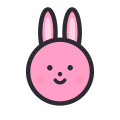
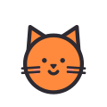
小小字卡 Little Words
Tap a picture to hear the word in Taiwan Mandarin (Traditional Chinese), then open 演一演 (role-play) or 問一問 (questions). The EN button shows or hides English.
動物 dòngwù · Animals
動作 dòngzuò · Actions
房子 fángzi · House
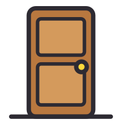
門méndoor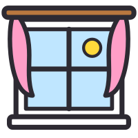
窗戶chuānghuwindow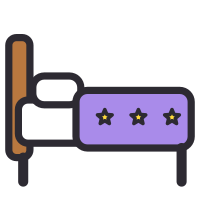
床chuángbed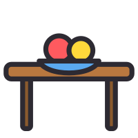
桌子zhuōzitable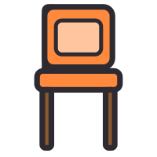
椅子yǐzichair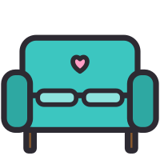
沙發shāfāsofa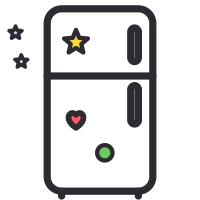
冰箱bīngxiāngfridge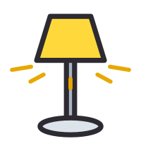
燈dēnglight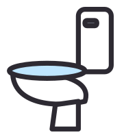
馬桶mǎtǒngtoilet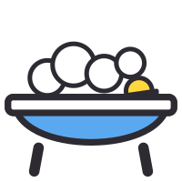
浴缸yùgāngbathtub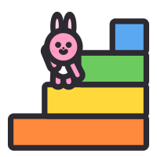
樓梯lóutīstairs 電視diànshìTV